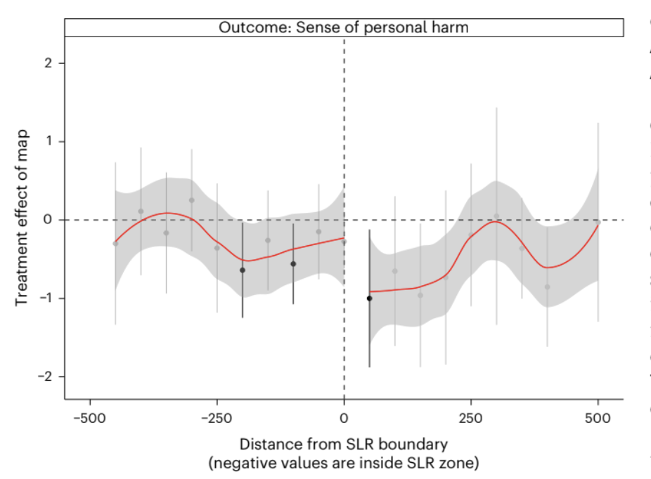
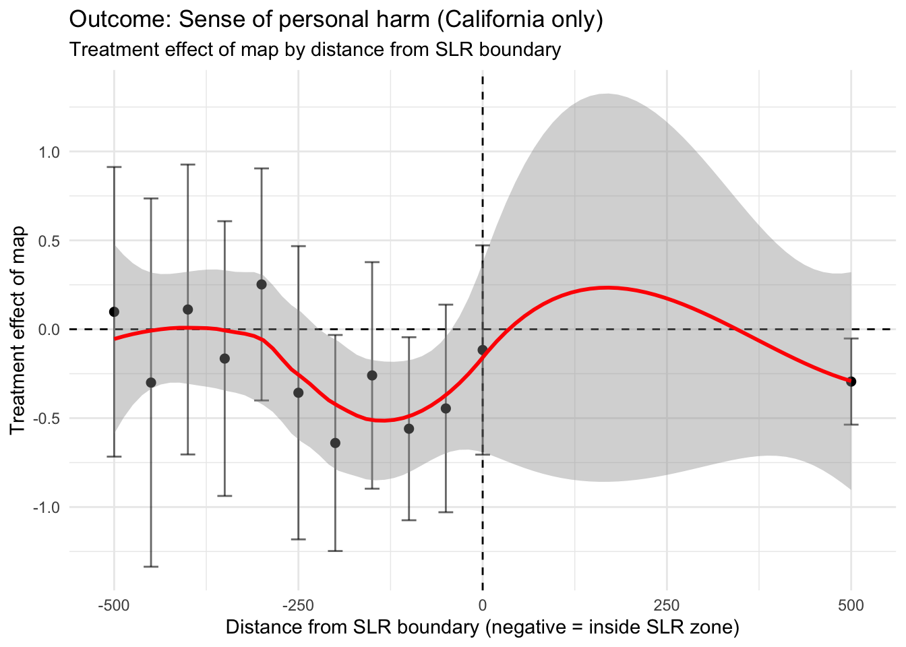

The following blog post breaks down the use of a randomized experiment and replicates the methods and code (using the original data) from a published study. Navigate to the appropriate sections for the following:
Background: A brief overview of the study we are replicating.
Study Design:
Explanation of the randomized experiment
Survey methods
Outcome variable
Running variable
Causal Identification Strategy
Recreation of Results/Figure 4: Our version of the study’s methods and code, using only a subset of the data.
Interpretation and Conclusion:
3 major takeaways
Causal identification
Statistical assumptions
Sampling and External Validity
Outcome validity concerns
A full exploration of the study and the accompanying code can be found in our GitHub repository.
Background
Sea‑level rise (SLR) is one of California’s most pressing climate risks. Yet even in a climate‑aware state, public concern about SLR remains surprisingly low. Mildenberger et al. (2024) test whether personalized SLR maps increase resident concern by showing how rising seas could affect their home.
The surprising finding: maps often reduce perceived personal harm, even for people whose homes are projected to flood.
This blog post walks through the design‑based causal method of a randomized experiment to recreate the California‑only version of Figure 4, which shows how the map’s treatment effect varies with distance from the SLR boundary. The original study conducted this analysis on coastal communities of New Jersey, Florida, and Virginia, as well. California data comes from the San Francisco Bay Area.
We opted to conduct the replication using data from only one state in order to explore whether study findings hold even when considering just a subset, as well as limit our scope to allow for a more in-depth analysis of the causal method itself. Additionally, we chose California because provides the cleanest replication of Figure 4 due to consistent geospatial data availability and a larger sample size within a single region.
Study Design
Randomized experiment
Respondents in California were recruited using address‑level mail‑to‑web sampling. Each respondent was randomly assigned to:
Treatment (treat_map = 1): See a customized SLR map centered on their home
Control (treat_map = 0): See no map
Because treatment is randomized, the difference in outcomes between treated and control respondents is meant to be a causal estimate of the map’s effect.
Additionally, the study utilized a geographic risk discontinuity design to test whether there was a difference in concern between respondents that were just within or just outside of the flood zone. Under these assumptions, these residents should be relatively similar in most covariates other than the risk to sea level rise. A jump in concern between groups on either side of the threshold would indicate a treatment effect.
Survey Methods
Individualized letters were sent to households within the sample area (San Francisco Bay, CA) in Fall 2020; the timing of survey completion depended on when respondents chose to complete it. The average response rates inside and outside the projected SLR boundary (as a fraction of mailed invitations) – of all 4 states in the original study – was 2.6% and 3.1% respectively. Treatment, or whether the letter/survey was accompanied by a map of SLR, was randomized using the Qualtric web platform.
Although the randomization assumption was met in this case, the low rate of response has the potential to contribute non-response/participation bias in the outcome.
Outcome variable
dv_personal — The study measures perceived risk or personal harm from SLR using a 0-3 scale, which respondents selected in their surveys.
Running variable
To recreate Figure 4, we use:
dist_min — distance (in meters) from the SLR boundary, where negative values correspond to homes inside the projected flood zone and positive ones outside of it.
This running variable is used to estimate spatial heterogeneity in the treatment effect.
Causal Identification Strategy
The randomized sample estimates an Average Treatment Effect (ATE). Because map exposure is randomly assigned, the causal effect is simply:
ATE = mean outcome of those that received the SLR map - mean outcome of those that did not receive map
Spatial heterogeneity/geographic risk discontinuity (Figure 4) is leveraged to understand whether the map works differently for people closer to the flood zone. The study does the following:
Bin respondents into 50‑meter intervals of distance to the SLR boundary
Estimate the treatment effect within each bin
Plot those bin‑specific effects against distance
To reiterate, this is not a formal regression discontinuity design, but it borrows the intuition that if the map increases personal relevance, the treatment effect should be strongest near the boundary.
Study Result
The treatment effect is negative (reduces concern of SLR risk), regardless of geographic location. Across all four states, the authors find that personalized SLR maps reduce perceived personal harm. Respondents shown a map report significantly lower concern than those in the control group, even when their homes are explicitly shown inside the projected flood zone. This counterintuitive “backfire effect” is one of the central findings of the study.
Recreation of Results/Figure 4
The following section contains code that estimates the Average Treatment Effect using the randomized experiment data. It also prepares the data necessary to recreate Figure 4, or the geographic risk discontinuity, and plots it.
Load Required Packages
library(tidyverse)
library(broom)
library(estimatr)
library(gtsummary)Load and Clean California Data
# CA survey data
data_ca <- read_csv(here("blog", "slr-random-experiment-sf","data", "SeaLevelRiseSurvey_California_January+16,+2021_13.54.csv")) %>%
.[-c(1,2),] %>%
mutate(geo = "CA")
# Load CA distance-to-boundary file
dist_ca <- read_csv(here("blog", "slr-random-experiment-sf","data", "ca_dist_mins.csv"))
# Load CA combined metadata
cw_ca <- read_csv(here("blog", "slr-random-experiment-sf","data", "ca_combined_final_withtraffic_sub.csv"))
# Load flood zone file
fld_zone <- read.csv(here("blog", "slr-random-experiment-sf", "data", "fld_zone.csv"))Merge Survey, Distance and Flood Zone
dist_ca_clean <- dist_ca %>%
# Keep only the first occurrence
filter(!duplicated(.)) %>%
group_by(adds) %>%
# Filter to minimum at each address
filter(dist_min == min(dist_min)) %>%
inner_join(cw_ca %>% # Join traffic data on addresses, and retain corresponding emails and IDS
select(adds, email, FID) %>%
filter(!duplicated(.))) %>%
rename(RecipientEmail = email) %>%
inner_join(fld_zone %>% # Join flood zone info on addresses, keeping county, tract, and flood zone info
select(adds, COUNTYFP, TRACTCE, FLD_ZONE) %>%
distinct(adds, .keep_all = TRUE))In the analysis we are replicating in this blog post, traffic data is not used (but it used for another experiment in the same study, which is why it is included here).
Data Description: This intermediary clean data frame contains the following columns:
adds- Residential addresses where surveys were sentdist_min- The minimum distance to the SLR boundaryRecipientEmail- Email address associated with recipient of surveyFID- Feature IDs from the corresponding geospatial data setCOUNTYFP- County identifier (there are 10 unique counties included in this study)TRACTCE- Census tract identifierFLD_ZONE- Flood zone area identifier
Construct California-Only Analytic Dataset
# Create function that recodes survey responses to numeric values
dv_recode <- function(x){
case_when(
x == "Not at all" ~ 0,
x == "Only a little" ~ 1,
x == "A moderate amount" ~ 2,
x == "A great deal" ~ 3
)
}
# Clean CA data frame
data_ca_clean <- data_ca %>%
# Join with cleaned distance data, by email
left_join(dist_ca_clean, by = "RecipientEmail") %>%
mutate(
# Boolean variable denoting whether observation received a map treatment
treat_map = !is.na(exp_emphasis),
# Boolean variable denoting whether the image shown was a SLR image
slr = str_detect(img, "SLR"),
# Recode survey responses using function made above
dv_personal = dv_recode(slharmpersonal),
# Flip sign of dist_min so that negative values represent closer to coast/greater risk
dist_min = ifelse(slr == TRUE, -dist_min, dist_min)
) %>%
# Remove NA values
filter(!is.na(dv_personal), !is.na(dist_min))California-Only Covariate Balance Table
# Create balance table comparing groups that did and did not receive treatment
data_ca_clean |>
select(race, edu, gender, ideo, party, dist_min, treat_map) |>
tbl_summary(
by = treat_map,
statistic = list(all_continuous() ~ "{mean} ({sd})")) |>
modify_header(label ~"**Covariate**") |>
modify_spanning_header(c("stat_1", "stat_2") ~ "**Map Treatment**") |>
as_gt() |>
gt::opt_interactive(use_compact_mode = TRUE) # Reduce long balance table1 n (%); Mean (SD)
Covariate Summary: The covariate balance table compares demographic and geographic features between respondents who received the SLR map treatment and those who did not. Across covariates like race, gender, distance from SLR boundary, etc., the distributions are similar between groups, indicating successful randomization. This balance is essential for this study’s causal identification strategy as dv_personal can be attributed to the map itself rather than underlying differences between respondents.
Data Description: The final clean data frame contains a total of 123 columns, we will not summarize in entirety here. Those that are necessary for our analysis include:
dv_personal: Survey result, recoded as 0-3 to represent responses “Not at all”, “Only a little”, “A moderate amount”, and “A great deal”, respectively, when residents were asked about SLR concern. This is our outcome variable.treat_map: Whether treatment was applied (SLR map included in survey). This is our treatment variable.dist_min: Minimum distance (in meters) to SLR boundary. This is the running variable for our spatial heterogeneity test.
This data contains 680 observations from California residents. The entire dataset (not used here) containing data from all four states has a sample size of 1,243
In the following steps, we replicate two components of the study:
- The Average Treatment Effect (ATE) of map exposure on perceived personal harm, and
- The spatial heterogeneity analysis used to construct Figure 4.
Step 1 - Estimate the ATE of California
# Run robust linear model, using personal risk as response and map treatment as predictor
mod_ate <- lm_robust(dv_personal ~ treat_map, se_type = "HC1",
data = data_ca_clean)
# Print summary
summary(mod_ate)
Call:
lm_robust(formula = dv_personal ~ treat_map, data = data_ca_clean,
se_type = "HC1")
Standard error type: HC1
Coefficients:
Estimate Std. Error t value Pr(>|t|) CI Lower CI Upper DF
(Intercept) 1.5646 0.04869 32.137 2.129e-138 1.4690 1.6602 678
treat_mapTRUE -0.2529 0.07454 -3.392 7.332e-04 -0.3992 -0.1065 678
Multiple R-squared: 0.01685 , Adjusted R-squared: 0.0154
F-statistic: 11.51 on 1 and 678 DF, p-value: 0.0007332The above code chunk conducts a simple linear regression of dv_personal on treat_map, which is estimated using lm_robust() with HC1 (heteroskedasticity-consistent) standard errors. This results in an estimate of the average treatment effect of seeing the map on perceived personal harm.
This identification approach is a simple difference in means under randomization, meaning that no covariates , fixed effects, or matching are used. The intercept reported by the model is 1.565 (p < 0.001), representing the mean level of perceived personal harm among control-group respondents. As this is on a 0-3 scale, this indicates a moderate baseline level of concern. The treatment coefficient is −0.253 (SE = 0.075, p = 0.0007), meaning that respondents who saw the personalized SLR map reported roughly a quarter of a point less personal concern than those who did not. The 95% confidence interval excludes zero, which indicates that the map causally reduces perceived personal harm
Step 2 — Create distance bins
# Set bin width
bin_width <- 50
# Create data set where each observation is binned based on distance away from SLR line
data_ca_binned <- data_ca_clean %>%
mutate(
dist_bin = bin_width * round(dist_min / bin_width),
dist_bin = pmax(pmin(dist_bin, 500), -500)
)The above code discretizes the dist_min variable into 50 meter bins by rounding to the nearest multiple of 50. Bins are capped at +- 500 meters, meaning that all observations more than 500 meters from the SLR boundary are lumped together into “extreme” bins.
Step 3 - Estimate treatment effect within each bin
effects_ca <- data_ca_binned %>%
# Keep only distance bins that are more than 15 meters away from SLR line/flood zone
group_by(dist_bin) %>%
filter(n() >= 15) %>%
# Run same model as before
do(tidy(lm_robust(
dv_personal ~ treat_map,
se_type = "HC1",
data = .
))) %>%
# Ungroup
ungroup() %>%
# Keep only observations that received treatment
filter(term == "treat_mapTRUE") %>%
# Calculate confidnece intervals
mutate(
ci_low = estimate - 1.96 * std.error,
ci_high = estimate + 1.96 * std.error
)The above code conducts a separate OLS regression of dv_personal on treat_map with HC1 standard errors for each of the bins. Bins with less than 15 observations are dropped to reduce noise. This should, in theory, test the impact of the map based on the flood zone. For this to work, randomization must be maintained across each bin.
Step 4 - Plot California - Only Figure
# Replicate Figure 4, only with SF Bay Area data
ggplot(effects_ca, aes(x = dist_bin, y = estimate)) +
geom_hline(yintercept = 0, linetype = "dashed") +
geom_vline(xintercept = 0, linetype = "dashed") +
geom_point(size = 2) +
geom_errorbar(aes(ymin = ci_low, ymax = ci_high), width = 20, alpha = 0.6) +
geom_smooth(method = "loess", se = TRUE, color = "red") +
theme_minimal() +
labs(
title = "Outcome: Sense of personal harm (California only)",
subtitle = "Treatment effect of map by distance from SLR boundary",
x = "Distance from SLR boundary (negative = inside SLR zone)",
y = "Treatment effect of map"
)
The above code produces a scatter plot of bin specific treatment effects (y-axis) against the distance from the SLR boundary (x-axis). The plot shows regardless of the distance from the SLR boundary, the effect of the treatment often trended negative even in the “extreme” group. This indicates that the survey may have backfired, as many people likely to be impacted seem to report feeling less perceived personal harm.
Interpretation
Three key insights emerge from the California analysis:
Maps reduce perceived personal harm across almost all distances. Even respondents whose homes are projected to flood show lower concern after seeing the map.
There is no sharp change at the SLR boundary. If maps increased personal relevance, we would expect a spike near 0 meters. Instead, the curve is flat and negative.
California behaves like the national sample. Despite higher climate awareness, the backfire effect persists. This insight is based on evidence from the original study, as well. The national sample is in reference to the first experiment that consisted of a sample of four coastal regions in the states of California, Florida, New Jersey and Virginia.
Backfire Effect: The negative treatment effect across most of the distances that indicates that maps may unintentionally make respondents less concerned about sea-level rise. Even respondents with homes projected to flood showed reduced perceived harm after viewing the map.
Conclusion and Summary
This study utilizes a randomized experiment to produce causal inference results. Additionally, spatial heterogeneity allows for mechanism exploration. However, due to the survey methodology, non-response bias persists.
For policymakers, the takeaway is clear: SLR maps may unintentionally reduce concern, even among at‑risk households.
Causal Identification:
The study’s identification strategy is a randomized survey experiment that provides credibility.
In the California sample, the treatment assignment (treat_map) is independent of respondent characteristics because the map is randomly shown after the individuals enter the survey.
For ATE and bin-level estimates in Figure 4, the causal effect can be identified if: Randomization was implemented correctly If one respondent’s treatment does not affect anther’s outcome (SUTVA) This leads to the belief that internal validity is strong and that the randomized design credibly identifies the short-run causal effect of seeing the map on the survey outcome.
Spatial Analysis Assumptions: The spatial heterogeneity analysis assumes the following: - Randomization holds within each distance. - Treatment effects are comparable across bins. - Distance to the SLR boundary is measured without error. - No sorting or manipulation around the boundary due to randomization of treatment.
Statistical Assumptions:
Because this is a randomized experiment, the assumptions are:
Randomized validity
The author reports no evidence of imbalance across the treatment and control groups Our California-only replication relies on the same randomization. Randomization was implemented through the Qualtrics platform, ensuring that map exposure was independent of respondent characteristics.
SUTVA
Respondents complete surveys individually and therefore cannot see each others maps Spillovers are unlikely due to the online setting Due to this, we believe that statistical assumptions are reasonable. Although all treated individuals received a map, the variation in treatment was their homes location relative to the flood zone.
Sampling and External Validity:
The sample are the California respondents that were recruited via “address-matched mail-to-web sampling”
This generalizes respondents that are Californian (more likely climate aware), metropolitan and more likely to engage with mailed surveys
Even inside the flood zone, respondents show low personal concern
These results may not generalize other people that are: Renters Low-income People that dont respond to mail surveys Other states or countries
Our replication focuses on California which is more climate-concerned than the national-average Because of this, we find external validity is weak and may not be able to be generalized to the broader population.
Therefore, due to the relatively small sample size and the geographic limit of only one coastal community, it can be concluded that these results can only be generalized to the residents of the San Francisco Bay Area, California.
Outcome Validity Concerns:
The outcome can be a concern as a single 4-point Likert item asking how much sea level rise will harm them personally raises some issues. The paper mentions respondents spent a median time of 33 seconds on the map page which may introduce a reaction that does not internalize the information fully The lower scores may reflect reassurance (they are not in the flood zone) or disbelief in the map Treatment Validity Concerns
A map of sea level rise shown once at the discretion of the respondents may not capture the full opinion of the respondent. 19% of the respondents found the map not very or not at all credible. We can say that the Measurement validity is decent, however maybe limited in measuring risk perception.
Other Limitations:
Spillover effect
It would not have been possible for the researchers to control whether or not residents discussed the surveys and their responses with each other. This could lead to observations that are not truly independent.
Time lag
Differences in response time (or even allowing for a long response time) could potential skew outcomes. For example, if there was a weather event that led to minor flooding in the time period that the survey was open, respondents who completed the survey before and after the event could be basing their beliefs off of different realities (and not off of the treatment). These discrepancies were not controlled for in the study methods.
Overall, our California‑only replication supports the paper’s core experimental finding: randomized exposure to personalized SLR maps causally reduces reported personal concern about sea‑level rise. The internal validity of this estimate is strong due to proper randomization, minimal risk of spillovers. However, the broader policy relevance of this effect is limited. The outcome measure uses coarse scores and maybe be sensitive to short‑run reactions, the treatment is a one‑time map rather than the standard policy communication, and the California/San Francisco sample may and probably is unrepresentative of the broader population. These factors weaken external validity and can raise questions about whether the observed “backfire effect”. In all, the experiment credibly identifies a short‑run causal effect in this specific survey context, but the evidence is less convincing as support for the stronger policy claim that SLR maps broadly reduce public concern in real‑world settings.